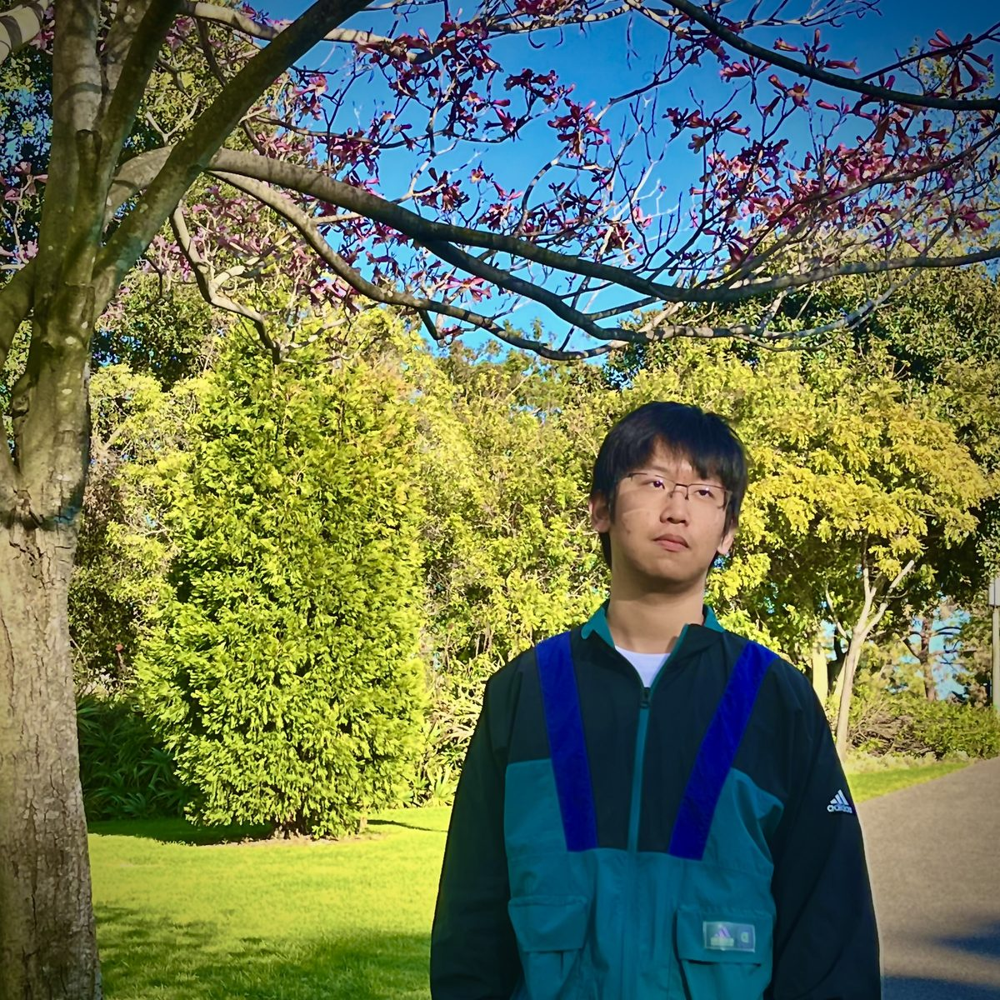

About Me.

FIG.00 — WHEN I WAS STILL THIN 那时我还瘦Hi, I'm Ryan.
Developer / Designer / Writer
一名对代码和设计都感兴趣的开发者。我相信好的软件和好的设计共享同一种品质：清晰。白天写程序，晚上写博客，周末做一些没什么用但很好玩的小工具。这个网站是我的数字花园——想法在这里发芽、生长、偶尔被推翻重来。
- BASEIrvine, California
- FOCUSWeb Development / Interface Design / Writing
- STACKHTML · CSS · JavaScript · TypeScript · More
- NOW正在读研，同时维护这个博客
Time
Line
JOURNEY — 轨迹
-
2026 — NOW
建立数字花园
上线个人博客，开始系统性地公开写作。
-
2025
研究生阶段
就读于 UC Irvine，同时做一些独立小项目。
-
2023
第一次被设计击中
意识到界面不只是"能用"，还可以"很美"。从此走上码农 × 设计的双修路线。
-
2021
Hello, World
写下第一行代码。当时并不知道这行代码会通向哪里。
好的设计是尽可能少的设计。不是因为少了省事，而是因为剩下的每一样东西，都必须有存在的理由。